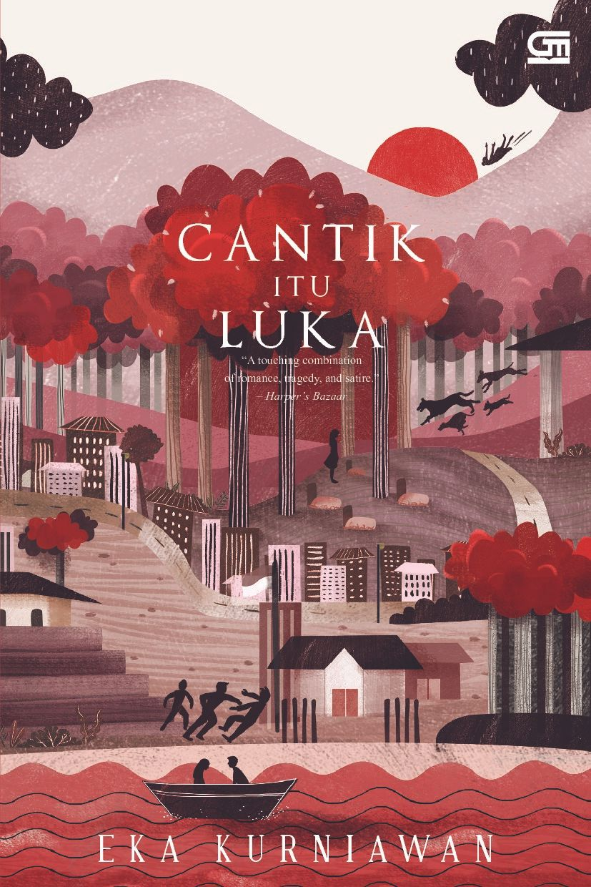

menceritakan tentang kisah cinta yang bertepuk sebelah tangan dan hampir semua cerita dalam buku ini menceritakan tentang pengalaman cinta Radit maupun orang-orang terdekatnya
Bercerita tentang Bujang yang kembali harus berpetualang setelah pergi dan pulang. Saat Bujang sedang berada di pusara mamak dan bapaknya, Bujang mendapatkan sebuah....

Kisah Cantik Itu Luka berlatar belakang pada masa penjajahan dan mengisahkan kehidupan kompleks tokoh utama Dewi Ayu, seorang perempuan cantik dan eksotis.